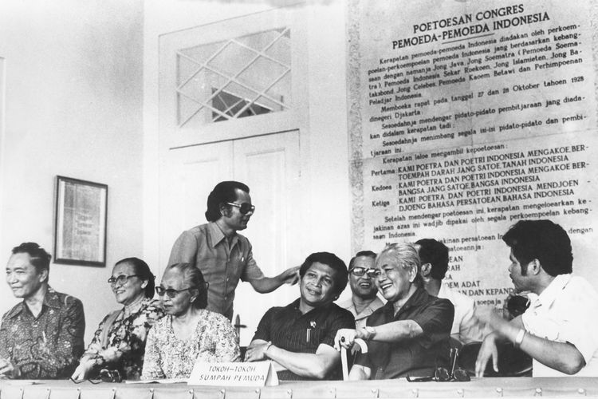

Kongres Pemuda 1
Kongres Pemuda 1 adalah pertemuan penting yang bersifat nasional dengan tujuan membahas upaya untuk mencapai kemerdekaan Indonesia. Kongres Pemuda 1 ini dilaksanakan pada tanggal 30 April hingga 2 Mei 1926 di Kawasan Lapangan Banteng, Jakarta
Kongres Pemuda 2
kongres pergerakan pemuda Indonesia yang melahirkan keputusan yang memuat ikrar untuk mewujudkan cita-cita berdirinya negara Indonesia, yang dikenal sebagai Sumpah Pemuda
Tokoh tokoh Sumpah Pemuda
-Soegondo Djojopoespito (PPPI) -R. M. Joko Marsaid (Jong Java) -Mohammad Yamin (Jong Sumatranen Bond) -Amir Sjarifoeddin (Jong Bataks Bond) -Johan Mohammad Cai (Jong Islamieten Bond)
Isi Sumpah Pemuda

"Kami Putra dan Putri Indonesia, mengaku bertumpah darah yang satu, tanah air Indonesia." "Kami Putra dan Putri Indonesia, mengaku berbangsa yang satu, bangsa Indonesia." "Kami Putra dan Putri Indonesia, menjunjung bahasa persatuan, bahasa Indonesia."
Rapat Sumpah Pemuda
Sumpah Pemuda merupakan bagian dari hasil Kongres Pemuda II yang digelar pada 27-28 Oktober 1928. Ikrar tersebut kemudian diucapkan bersama-sama oleh seluruh perwakilan organisasi pemuda yang hadir.